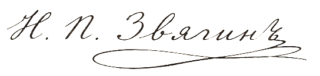

СЕКРЕТНО. В собственные руки.
По распоряжению Шефа жандармов, Его Высокопревосходительства генерала от кавалерии Бенкендорфа Александра Христофоровича, Вы сим прикомандировываетесь к Отдельному Корпусу жандармов по секретной части с возложением на Вас поручения чрезвычайной государственной важности.
С момента получения сего предписания Вам предоставляются нижеследующие полномочия.
Первое. Вы уполномочены действовать независимо от всякого губернского и уездного начальства в части, касающейся вверенного Вам поручения, не испрашивая согласования и не давая объяснений местным инстанциям.
Второе. Прилагаемый при сём Открытый лист за подписью Шефа Корпуса жандармов обязывает всякого военного и гражданского чина в губернии незамедлительно оказывать Вам всяческое содействие по первому Вашему требованию. Отказ в содействии или промедление при предъявлении означенного документа является нарушением воинской присяги и влечёт немедленный арест.
Третье. Вся переписка по сему делу ведётся исключительно напрямую с III Отделением, по прилагаемому адресу, минуя губернские инстанции.
Именем Его Императорского Величества обязываю Вас хранить сие предписание в строжайшей тайне.
Дежурный генерал
Отдельного Корпуса жандармов
